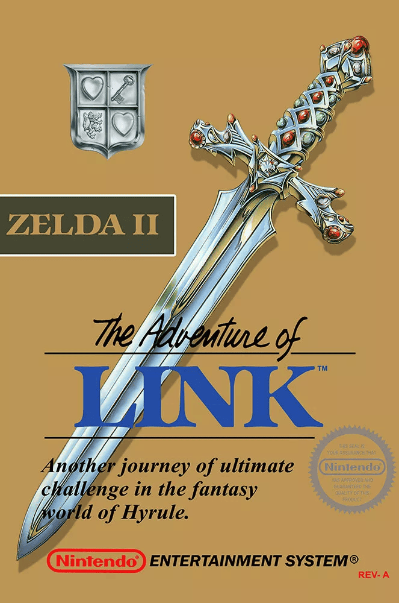

Zelda II: The Adventure of Link ging einen ungewöhnlichen Weg für die Reihe und mischte die Top-Down-Erkundung mit seitlich scrollenden Action-RPG-Abschnitten. Es führte ein RPG-orientiertes Level- und Kampf-System mit Erfahrungspunkten ein, das in der Serie einzigartig blieb. Berüchtigt ist Zelda II für seinen hohen Schwierigkeitsgrad und seine Plattform-Passagen; gleichzeitig ist es ein interessantes Experiment in der Geschichte der Serie.
| Titel | Zelda II: The Adventure of Link |
| Veröffentlichung | 14. Januar 1987 (JP Famicom Disk System) |
| Plattform | NES |
| Entwickler | Nintendo R&D4 |
| Produzent | Shigeru Miyamoto |
| Komponist | Akito Nakatsuka |
Zelda II stellt eine radikale Abweichung dar: es kombiniert eine Oberweltkarte im Zelda-Stil mit seitlich scrollenden Kampf- und Plattformabschnitten. Das Kampfsystem ist reflexbasiert (Schwert, Block, Magie), ergänzt durch ein RPG-ähnliches XP/Level-System, bei dem Link Attribute (Kampf, Leben, Magie) steigert. Neben Dungeons gibt es prozedural weniger offene Bereiche, dafür prüfungsartige Plattformpassagen und NPC-Interaktionen, die neue Fähigkeiten freischalten. Das Spiel fordert präzises Timing und Kenntnis von Gegner-Pattern; viele Bosskämpfe verlangen Auswendiglernen. Stilistisch ist es härter und weniger explorativ als der Vorgänger, experimentiert aber erfolgreich mit Progression und Side-Scroller-Elementen.